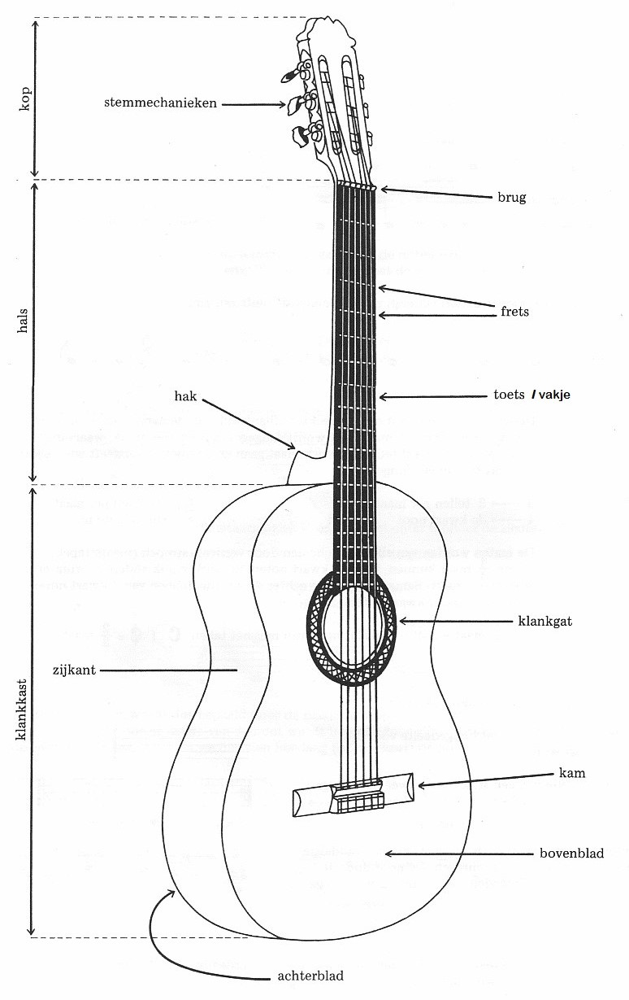

We zoomen in op de onderdelen van een akoestische gitaar. Een afbeelding van een gitaar met de benamingen is hieronder weergegeven.

Zoals ze zien op het plaatje hierboven is een gitaar in drie delen verdeeld. De kop, hals en klankkast. Elke deel heeft een belangrijk onderdeel, die essentieel is voor een gitaar. We gaan ze een voor een bijlangs.
Op de kop zitten de stemmechanieken. De stemmechanieken zijn ervoor om je gitaar te stemmen. Door de stemmechanieken steviger vast te draaien, komt de snaar strakker te staan, waardoor de toon hoger gaat klinken. De Stemmechanieken zijn belangrijk,
We gaan verder naar de hals. Het stukje metaal dat de kop en hals schijd noemen we de brug. De hoogte van de brug is bij sommige gitaren verstelbaar. Herbij geldt, hoe hoger de brug, hoe meer kracht je moeten zetten om de snaren in te drukken, voor het zelfde mooie geluid. Verder zie je op de afbeelding dat de hals is verdeeld in vakjes. Één vakje, of toets wordt ook wel een fred genoemd. De verschillende freds zijn belangrijk voor akkoorden.
De klankkast is de plek waar door middel van het klankgat het geluid van de snaren wordt versterkt, zodat het goed hoorbaar is ook van een afstandje. De klankkast versterkt het geluid, omdat het geluid daar via de wanden vaak kan terugkaaatsen. Zonder klankkast was de gitaar geen goed begeleidingsinstrument geweest, denk ik. Op de kam, zijn de snaren zo vast gemaakt, dat ze op spanning gebracht kunnen worden door de stemmechanieken.
Bij al deze hulpmiddelen zijn er ook weer verschillende soorten, voor de verschillende stylen waarin je gitaar kun spelen. De verschillende hupmiddelen kunnen namelijk een totaal andere sound geven.